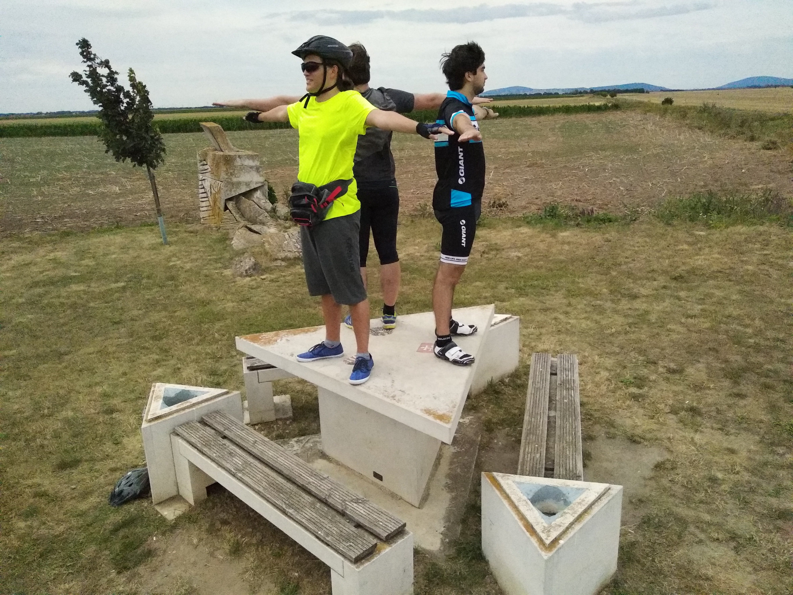
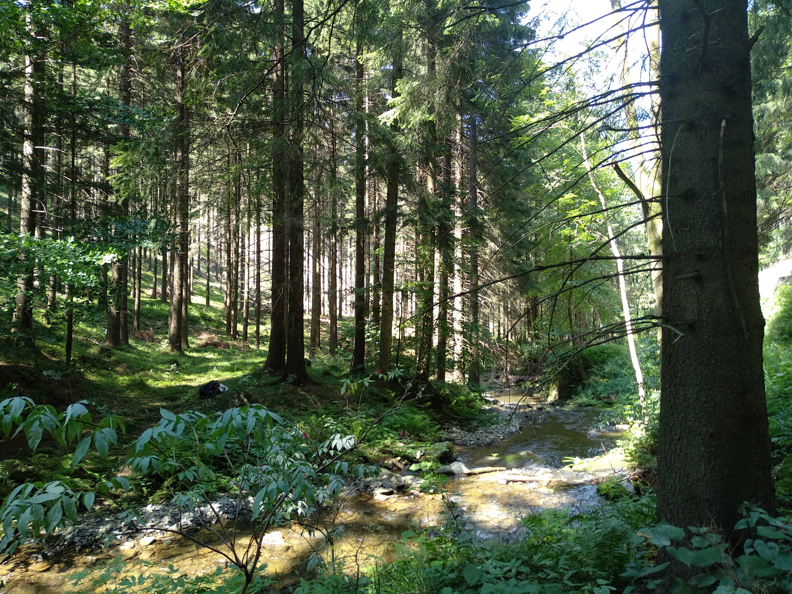
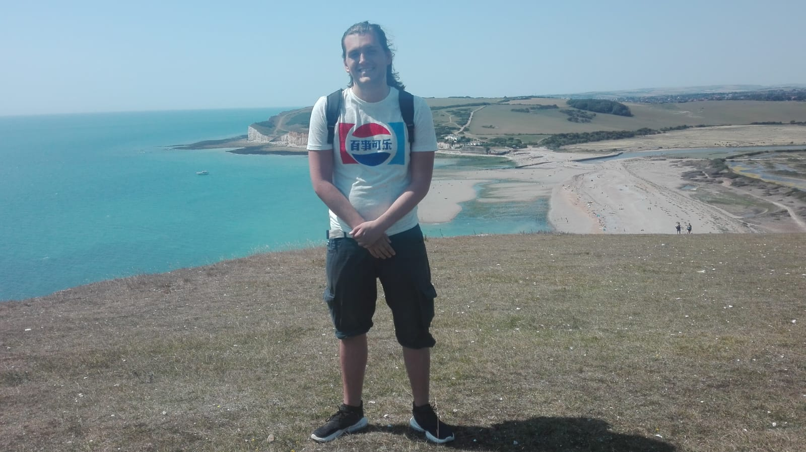
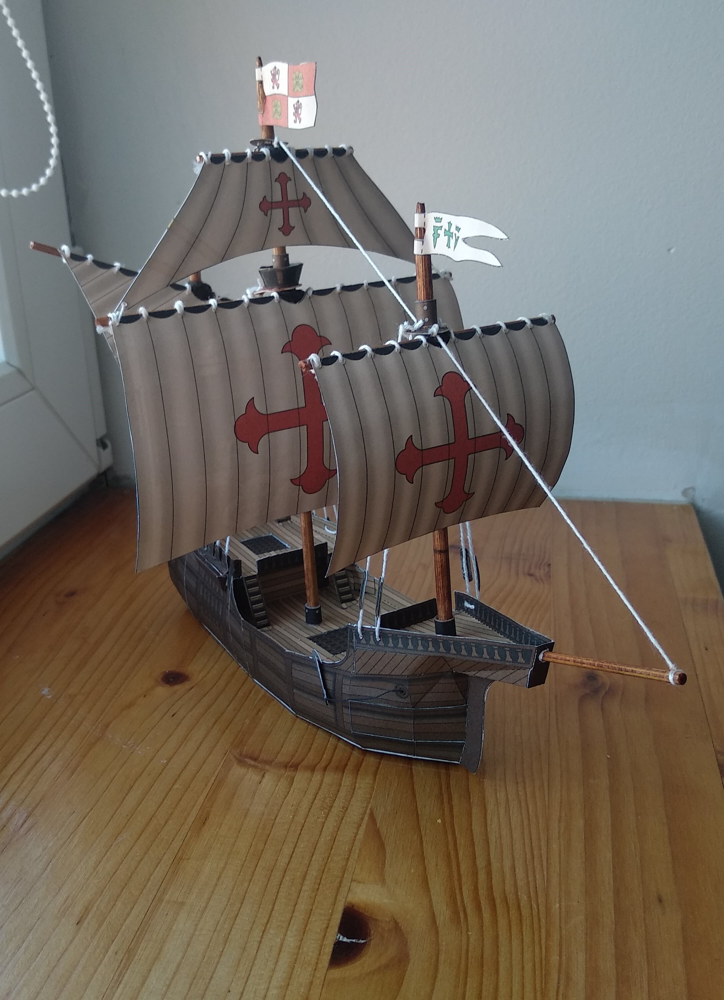

“You must be shapeless, formless, like water. When you pour water in a cup, it becomes the cup. When you pour water in a bottle, it becomes the bottle.
When you pour water in a teapot, it becomes the teapot. Water can drip and it can crash. Become like water my friend.”
Bruce Lee
21. července 2019
Rakousko-Uhersko 2019

Jakožto úspěšný maturant jsem se vydal 21. července 2019 s bandou přátel na kola po Rakousku-Uhersku. A to doslova...
13. srpna 2020
Stříbrná expedice DofE

Pár fotek ze stříbrné expedice DofE. Jak cvičné, tak ostré, kde jsem zažil kopec zábavy!
16. ledna 2021
Co všechno se dá stihnout za pět minut?
Když jsem měl pár dní zpátky zkouškové, tak jsem nevěděl, kam mám dříve skočit. Pokud se vidíte v této situaci i vy, doporučuji začít s nějakým plánováním. Kromě toho doporučuji při učení i takzvanou metodu Pomodoro. Ale teď mluvím z cesty. Pokud si najdete alespoň těch pět minut, které vám nebudou chybět, můžete zkusit tyhlety věci nad kterými jsem já podumal.
...více
2. srpna 2020
Albion 2020

Tady bude fotomontáž mé cesty do Anglie během doby "mezicovidové"
14. února 2021
Showcase #1- Santa Maria

Vystřihovánka Kolumbovi lodi Santa Maria